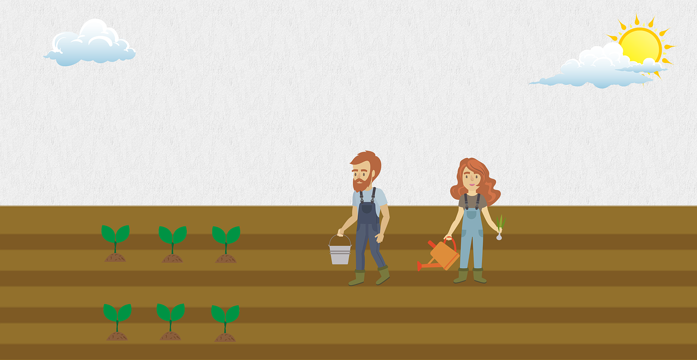
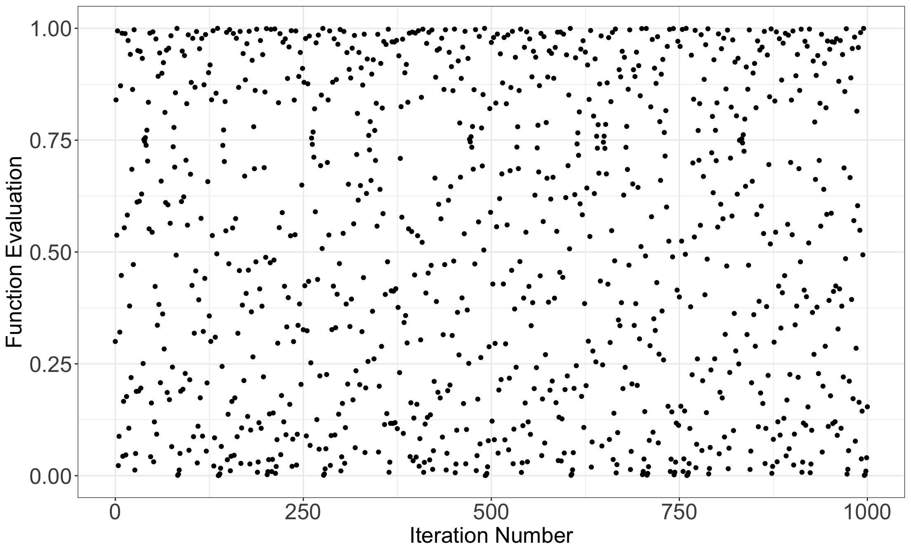
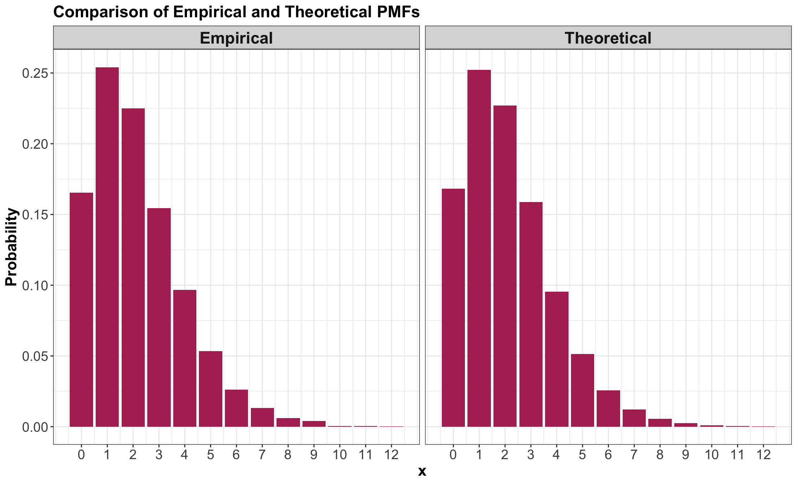
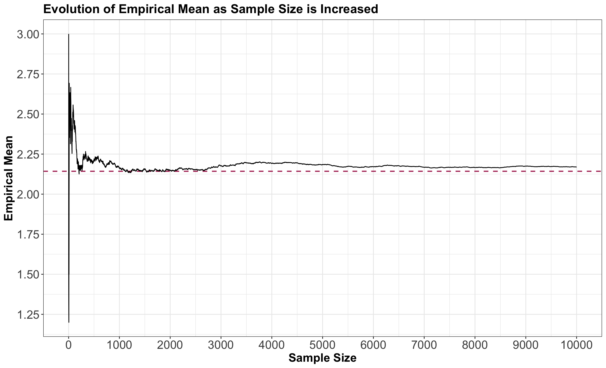

Outline
- Review on Random Samples
- Seeds
- Generating Random Samples: Code
- Running Simulations
- Multi-Step Simulations
1. Review on Random Samples
- A random sample is a collection of random outcomes/variables.
- A random sample of size \(n\) is usually depicted as \(X_1, \ldots, X_n\).
- Some examples of random samples are listed as follows:
- The outcomes of ten dice rolls (\(n = 10\)).
- The daily high temperature in Vancouver for each day of the year (\(n = 365\)).
Heads-up!

- Unless we make additional sampling assumptions, a default random sample is said to be independent and identically distributed (or iid).
- Moreover, the word stochastic refers to having some uncertain outcome.
- The opposite of stochastic is deterministic: an outcome that will be known with 100% certainty.
2. Seeds

- Computers cannot actually generate truly random outcomes.
- Instead, they use something called pseudorandom numbers.
- As an example of a basic algorithm that produces pseudo-random numbers between 0 and 1, consider starting with your choice of number \(x_0\) between 0 and 1, and iterating the following equation:
\[x_{i+1} = 4 x_i (1 - x_i).\]
The output

- Random numbers between 0 and 1.
- For example, here is the resulting sequence when we start with \(x_0 = 0.3\) and iterate \(n = 1000\) times:
Plotting values from vector x

Some additional highlights!

- Although the previous sequence is deterministic, it behaves like a random sample.
- But not entirely! All pseudorandom number generators have some pitfalls.
- In this example, one pitfall is that neighbouring pairs are not independent of each other.
The seed or random state
- The seed (or random state) in a pseudo-random number generator is some pre-specified initial value that determines the generated sequence.
- In
R, we can set the seed using the set.seed() function.
- In
Python, we can use numpy.random.seed() from numpy.
- The seed gives us an added advantage over truly random numbers: it allows our analysis to be reproducible!
3. Generating Random Samples: Code
- We will look at some
R and Python functions that help us generate a random sample.
- Note we are still focusing on discrete distributions here.

3.1. From Finite Number of Categories
- In
R, we can generate a random sample from a discrete distribution with a finite number of outcomes using the sample() function.
Heads-up: Note that both R and Python have their own algorithms to generate pseudorandom outcomes, even though we provide the same seed.
How does sample() work in R?
- Put the outcomes as a vector in the first argument,
x.
- Put the desired sample size in the argument
size.
- Put
replace = TRUE so that sampling can happen with replacement.
- Put the probabilities of the outcomes as a vector respective to
x in the argument prob.
Heads-up: If these probabilities do not add up to 1, R will not throw an error. Instead, R automatically adjusts the probabilities so that they add up to 1.
R Example
- Here is an example of generating \(n = 10\) items using the Mario Kart item distribution from
lecture1.
How does numpy.random.choice() work in Python?
- Put the outcomes in the first argument,
a.
- Put the desired sample size in the argument
size.
- Put the probabilities of the outcomes respective to
x in the argument p.
Heads-up: In numpy.random.choice(), it is necessary that the probabilities in prob add up to 1.
Python Example
- Using the Mario Kart example again, we have the following:
3.2. From Distribution Families
- In
R, we can generate data from a distribution belonging to some parametric family using the rdist() function, where “dist” is replaced with a short form of the distribution family’s name.
- In
Python, we can use the stats module from the scipy library.
Function Summary

- The table below summarizes the functions related to some of the discrete distribution families we have seen.
| Binomial |
rbinom() |
scipy.stats.binom.rvs() |
| Geometric |
rgeom() |
scipy.stats.geom.rvs() |
| Negative Binomial |
rnbinom() |
scipy.stats.nbinom.rvs() |
| Poisson |
rpois() |
scipy.stats.poisson.rvs() |
How to use these functions?
- Sample size:
- For
R, put this in the argument n, which comes first.
- For
Python, put this in the argument size, which comes last.
- In both languages, each parameter has its own argument.
- Sometimes, like in
R’s rnbinom(), we have the option for different parameterizations.
- Be sure only to specify the exact number of parameters required to isolate a member of the distribution family!
Binomial Example
- \(n = 10\) random numbers with \(p = 0.6\) and 5 trials.
Heads-up!

- Let us not confuse the random sample size \(n\) (i.e.,
n in any R function to generate random numbers) with the number of trials \(n\) as a parameter of a Binomial random variable (i.e., size in rbinom()).
- For
Python, the Binomial parameter \(n\) is actually depicted as n and size is the number of Binomial random numbers in our sample.
Negative Binomial Example
- The Negative Binomial family is an example of a function in
R that allows different parameterizations.
\[X \sim \text{Negative Binomial} (k, p).\]
- \(X\) refers to the number of failures in independent successive Bernoulli trials before experiencing \(k\) successes with probability \(p\).
R Function rnbinom()
- This function generates
n Negative Binomial-distributed random numbers with arguments size as \(k = 5\) and prob as \(p = 0.6\):
Heads-up!
- Notice that specifying too few parameters results in an error (recall, we need to specify two parameters):
- In the case above, we need the argument
prob (i.e., parameter \(p\) in the Negative Binomial distribution). R will indicate that prob is missing.
Another way to use rnbinom() in R!
- Recall the expected value of a Negative Binomial random variable is
\[\mu = \mathbb{E}(X) = \frac{k(1 - p)}{p} = \frac{5(1 - 0.6)}{0.6} = 3.33.\]
- From
lecture2, we know that a distribution can also be parameterized with its corresponding mean.
Therefore…
- We can use the the argument
mu in the random number generator rnbinom(). Note mu refers to \(\mu = \mathbb{E}(X)\):
- We get the same random numbers via the same seed!
iClicker Question
Suppose you want to simulate hourly bank branch queues of customers. Historically, hourly queues show an average of 10 people.
What distribution (including parametrization) and R random number generator will you use to simulate 20 random numbers?
Select the correct option:
A. \(\text{Poisson}(\lambda = 1/10)\) with
rpois(n = 20, lambda = 1 / 10)
B. \(\text{Binomial}(n = 10, p = 1/10)\) with
rbinom(n = 20, size = 10, prob = 1 / 10)
C. \(\text{Poisson}(\lambda = 10)\) with
rpois(n = 20, lambda = 10)
D. \(\text{Geometric}(p = 1/10)\) with
rgeom(n = 20, prob = 1 / 10)
iClicker Question
During a random foodie tour, suppose you want to simulate the number of non-authentic Mexican restaurants you will try before encountering your very first authentic one in Vancouver. Overall, it is known that 70% of Mexican restaurants in Vancouver are considered non-authentic (but you do not have access to this list!).
What distribution (including parametrization) and R random number generator will you use to simulate 15 random numbers?
Select the correct option:
A. \(\text{Binomial}(n = 15, p = 0.7)\) with
rbinom(n = 15, size = 15, prob = 0.7)
B. \(\text{Geometric}(p = 0.3)\) with
rgeom(n = 15, prob = 0.3)
C. \(\text{Binomial}(n = 15, p = 0.3)\) with
rbinom(n = 15, size = 15, prob = 0.3)
D. \(\text{Geometric}(p = 0.7)\) with
rgeom(n = 15, prob = 0.7)
4. Running Simulations

- So far, we have discussed two ways to calculate quantities that help us communicate uncertainty (like means and probabilities):
- The distribution-based approach (using the distribution), resulting in true values.
- The empirical approach (using data), resulting in approximate values that improve as the sample size increases (i.e., the frequentist paradigm!).
The Mean
The true mean of a discrete random variable \(X\) can be calculated as \[\mathbb{E}(X) = \sum_x x \cdot P(X = x).\]
Or can be approximated using the empirical approach from a random sample \(X_1, \ldots, X_n\) by \[\mathbb{E}(X) \approx \frac{1}{n} \sum_{i=1}^n X_i.\]
4.1. Code for Empirical Quantities
- Here are some
R functions to calculate empirical quantities:
mean() calculates the sample average \[\bar{X} = \frac{1}{n} \sum_{i=1}^n X_i.\]var() calculates the sample variance \[S^2 = \frac{1}{n-1} \sum_{i=1}^n (X_i - \bar{X})^2.\]
Furthermore…
quantile() calculates the empirical \(p\)-quantile: the \(np\)’th largest (rounded up) observation in a sample of size \(n\).- For a single probability, calculate the mean of a condition.
- For an entire PMF, use the
table() function, or more conveniently, the janitor::tabyl() function.
- For the mode, either get it manually using the
table() or janitor::tabyl() function, or you can use DescTools::Mode().
4.2. Basic Simulation
- In Mexico City, consider a random person dating via some given app with a probability of having a successful date of \(0.7\).
Also…
- Suppose we want to evaluate the success of this given app via the number of failed dates before they experience \(5\) successful dates.
- We can translate the above inquiry as a random variable denoting failed dates has a Negative Binomial distribution: \[\begin{align*}
X &= \text{Number of failed dates before experiencing} \\
& \qquad \text{5 successful ones} \\
\end{align*}\] \[X \sim \text{Negative Binomial} (k = 5, p = 0.7) \quad \text{for } x = 0, 1, 2, ...\]
Obtaining our random sample…
- Let us demonstrate both a distribution-based and empirical approach to compute the variance and PMF.
- First, let us obtain our random sample (of, say, \(n = 10000\) observations).
4.2.1. Mean
- Theoretically, the mean of \(X\) is \(\mathbb{E}(X) = \frac{k(1 - p)}{p}\).
- We compute it as follows:
- Empirically, we can approximate \(\mathbb{E}(X)\) with the mean of the values in
random_sample:
4.2.2. Variance
- Theoretically, the variance of \(X\) is \(\text{Var}(X) = \frac{k(1 - p)}{p^2}\).
- We compute it as follows:
- Empirically, we can approximate \(\text{Var}(X)\) with the sample variance of the values in
random_sample:
4.2.3. Standard deviation
- Theoretically, the standard deviation of \(X\) is \(\text{sd}(X) = \sqrt{\frac{k(1 - p)}{p^2}}\).
- Empirically, we can approximate \(\text{sd}(X)\) with the sample standard deviation of the values in
random_sample:
4.2.4. Probability of Seeing \(0\) Failures (i.e., \(0\) failed dates!)
- Theoretically, this probability can be computed as
\[
P(X = 0 \mid k, p) = {k - 1 \choose 0} p^k (1 - p)^x.
\]
- We can automatically compute this probability via the density function
dnbinom() as follows:
Empirically…
- We can approximate \(P(X = 0 \mid k = 5, p = 0.7)\) by counting the number of random numbers equal to \(0\) in
random_sample and dividing this count over the sample size \(n = 10000\).
4.2.5. Probability Mass Function
- Just as we did it with \(P(X = 0 \mid k = 5, p = 0.7)\), we can also do it for \(P(X = i \mid k = 5, p = 0.7)\) with \(i = 1, 2, \dots\) (i.e., the whole PMF!).
Showing the output PMF
- Note that both probability columns are similar!
Plotting both PMFs

4.2.6. Mode
- Recall the mode is the outcome of the random variable with the largest probability.
- From our previous plots, we can see that it is \(X = 1.\)
4.2.6. The Law of Large Numbers
- The Law of Large of Numbers states that, as we increase our sample size \(n\), our empirical mean converges to the true mean we want to estimate.
- That is, as we increase our \(n\), our sample average \(\bar{X}\) converges to the true mean \(\mu\).
- Let us exemplify this: \[\begin{gather*}
X \sim \text{Negative Binomial} (k = 5, p = 0.7) \quad \text{with} \\
\mathbb{E}(X) = \frac{k(1 - p)}{p} = 2.14.
\end{gather*}\]
Increasing the sample size \(n\)

5. Multi-Step Simulations
- The previous univariate simulation might seem trivial, since we could calculate basically anything (theoretically speaking!).
- Where it gets more interesting is when we want to calculate things for a random variable that transforms and/or combines multiple random variables.

For example…
Consider a random variable \(T\) that we can obtain as follows: \[\begin{gather*}
X \sim \text{Poisson}(\lambda = 5) \\
T = \sum_{i = 1}^{X} D_i.
\end{gather*}\]
Where each \(D_i\) are iid with some specified distribution.
In this case, you would first need to generate \(X\), then generate \(X\) values of \(D_i\), then sum those up to get \(T\).
The Port of Vancouver
- Consider an example that a Vancouver port faces with gang demand.
- Whenever a ship arrives to the port of Vancouver, they request a certain number of gangs (groups of people) to help unload the ship.

Looking at the PMF!

Coding up a simulation function!
- The following function sums up simulated gangs requested by a certain number of ships with the above probability distribution as a default.
Using demand_gangs()
- As an example, let us check out the simulated grand total gang request from 10 ships:
- Now, suppose that the number of ships arriving on a given day follows a Poisson distribution with a mean of \(\lambda = 5 \text{ ships}\).